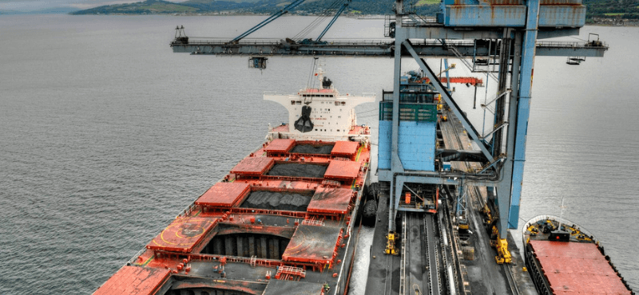

Alfred H Knight brinda confianza y seguridad a la cadena de suministro global mediante la evaluación de la calidad y cantidad de carga a granel, ensacada y en contenedores. Nuestros inspectores operan en diversas ubicaciones en nombre de nuestros clientes, incluyendo minas y puntos clave de las cadenas logísticas, como puertos de carga y descarga, almacenes y plantas de recepción, incluyendo refinerías, fundiciones y plantas de reciclaje.
| ✔ Inspección | ✔ Supervision | ✔ Inspección previa al envío |
| ✔ Inspección de contenedores | ✔ Realizar inspección de limpieza | ✔ Inspección de existencias |
| ✔ Inspección de almacén | ✔ Inspección de debida diligencia | ✔ Estudio de calado |
| ✔ Recuento | ✔ Muestreo | ✔ Supervisión del muestreo automatizado/mecánico |
| ✔ Preparación de muestras | ✔ Determinación de la humedad | ✔ Tamaño del material |
| ✔ Supervisión de la mezcla | ✔ Medición de barcazas | ✔ Detección de radiactividad |
| ✔ Supervisión de pruebas de mangueras | ✔ Inspecciones de daños en las balas de heno | ✔ Estudios de contaminación |